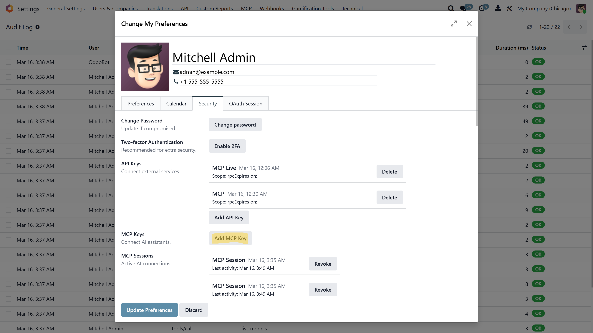

MuK MCP Server
Model Context Protocol Server for AI Agent Integration
MuK IT GmbH - www.mukit.at
Community
Enterprise


Turn your Odoo instance into a native MCP (Model Context Protocol)
server. Any MCP-compatible AI client — Claude Code, OpenCode,
Claude Desktop, Cursor, Windsurf, Codex CLI — can connect to the
/mcp endpoint and interact with your business data through
a standardized set of tools. No middleware, no extra processes.
Odoo is the MCP server.
Ships with 15 production-ready tools covering the full Odoo ORM surface: model discovery, schema introspection, search, read, create, update, delete, grouped aggregation, method execution, and chatter integration. Add your own tools through the backend UI — no code deployment required.
The /mcp endpoint speaks the full MCP Streamable HTTP
protocol natively, handling JSON-RPC 2.0 messages for
initialize, tools/list, and
tools/call. Supports stateful sessions, Server-Sent
Events for real-time notifications, and batch requests. Authentication
uses Bearer tokens — either dedicated MCP keys with optional
model-level scopes or standard Odoo API keys.
Connect your preferred AI coding assistant in seconds. Generate an MCP key from your Odoo user preferences, then add the server to your client configuration.
claude mcp add odoo \ --transport http \ --url https://your-odoo.com/mcp \ --header "Authorization: Bearer YOUR_MCP_KEY"
Or add to your claude_code_config.json:
{
"mcpServers": {
"odoo": {
"type": "url",
"url": "https://your-odoo.com/mcp",
"headers": {
"Authorization": "Bearer YOUR_MCP_KEY"
}
}
}
}
Add to your .opencode/config.json or opencode.json:
{
"mcp": {
"odoo": {
"type": "remote",
"url": "https://your-odoo.com/mcp",
"headers": {
"Authorization": "Bearer YOUR_MCP_KEY"
}
}
}
}
Add to your claude_desktop_config.json:
{
"mcpServers": {
"odoo": {
"type": "url",
"url": "https://your-odoo.com/mcp",
"headers": {
"Authorization": "Bearer YOUR_MCP_KEY"
}
}
}
}
Add to your .cursor/mcp.json:
{
"mcpServers": {
"odoo": {
"url": "https://your-odoo.com/mcp",
"headers": {
"Authorization": "Bearer YOUR_MCP_KEY"
}
}
}
}
codex --mcp-server "odoo=https://your-odoo.com/mcp" \
--mcp-header "odoo=Authorization: Bearer YOUR_MCP_KEY"
Ships with a complete set of ORM tools covering the full lifecycle of Odoo data — from discovery to manipulation. Every tool is manageable via the backend UI and can be enabled, disabled, or customized individually.
| Tool | Category | Description |
|---|---|---|
list_models |
Read | Discover available Odoo models by substring search |
list_modules |
Read | List installed modules with versions and states |
get_model_schema |
Read | Get field definitions, types, relations, and selection values |
get_user_context |
Read | Authenticated user info, company, language, and security groups |
get_access_rights |
Read | Check CRUD permissions and list access control rules |
search_read |
Read | Search records by domain with pagination and sorting |
read_record |
Read | Read specific records by their database IDs |
search_count |
Read | Count records matching a domain filter |
read_group |
Read | Grouped aggregation (GROUP BY) with sum/count |
get_record_messages |
Read | Retrieve chatter history, comments, and field tracking |
create_record |
Write | Create new records with relational field support |
update_record |
Write | Partial updates on existing records by ID |
delete_record |
Write | Permanently delete records by ID |
post_message |
Write | Post comments or internal notes on chatter threads |
execute_method |
Write | Call any public method on a model (private methods blocked) |
Add custom tools directly through the backend UI at
Settings > MCP Server > Tools — no code
deployment required. Each tool consists of a name, description, JSON
Schema for input parameters, and Python code executed in a sandboxed
safe_eval context. Tools can be enabled, disabled, and
reordered individually. The AI client is automatically notified when
the tool list changes.
Every MCP key supports fine-grained Model Scopes — restrict access to specific models with independent read, write, create, and delete permissions. Keys without scopes have unrestricted access (subject to the user's own Odoo permissions).
Built-in rate limiting (configurable per key, default 60 req/min) protects against runaway AI loops. A full audit log records every MCP request with method, tool, model, duration, and status — accessible at Settings > MCP Server > Audit Log.
The server maintains stateful sessions per the MCP specification. Sessions track the last activity timestamp and are automatically cleaned up after the configured timeout (default: 24 hours). Users can view and revoke their active MCP sessions from their user preferences. Administrators can manage all sessions from the backend menu.
Are you having troubles with your Odoo integration? Or do you feel
your system lacks of essential features?
If your answer is YES
to one of the above questions, feel free to contact us at anytime
with your inquiry.
We are looking forward to discuss your
needs and plan the next steps with you.